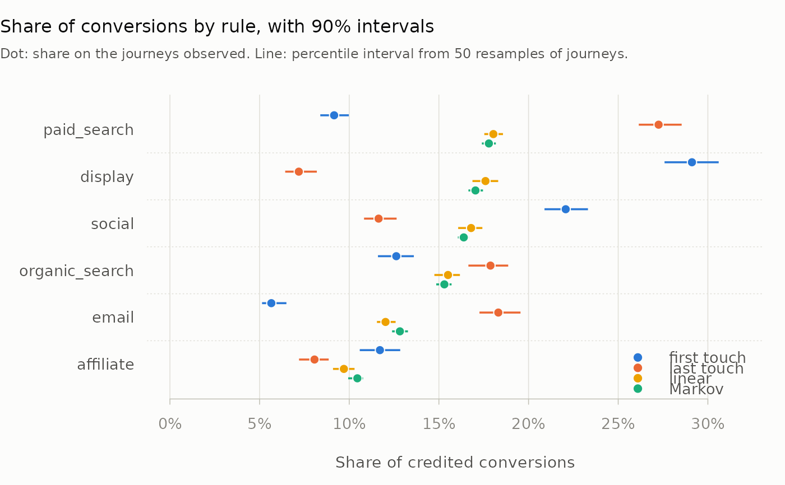
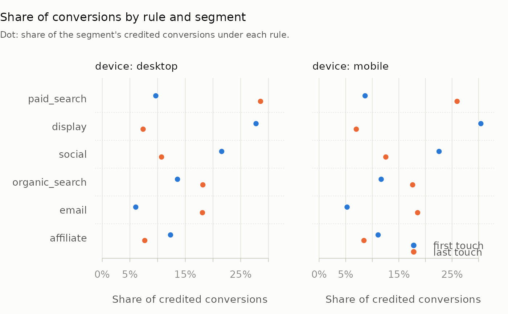

Plot attribution shares with intervals or by segment
Source:R/plot-attribution.R
plot.mm_attribution_intervals.RdOne row per channel, with each rule's share as a dot in that rule's colour.
When attribute() computed bootstrap intervals, each dot sits on a line
spanning its interval, so the gap between rules can be read against the
sampling noise in each. A result of attribute(by = ) gets one panel per
segment, on a shared axis.
Arguments
- x
A result of
attribute()withtimesabove 0, withby, or with both.- n
Show the
nchannels with the largest mean share.- ...
Graphical arguments:
mainandxlabreplace the defaults, andcolgives one colour per rule, in the order the rules appear inx. Others are ignored.
Details
A rule keeps its colour whichever rules ran, and first touch, last touch
and Markov have the colours plot.mm_attribution() gives them. Channels
are ranked by their mean share over every rule and segment drawn. With
more than four segments the first four are drawn, with a message; subset
the rows of x to choose others. A missing share is left out with a
warning, and a missing bound leaves out its line.
See also
attribute(), plot.mm_attribution() for a result with neither
intervals nor segments.
Examples
data(mm_events)
paths <- build_paths(mm_events, id = "customer_id", channel = "channel",
timestamp = "timestamp", conversion = "conversion")
boot <- attribute(paths, rules = c("first", "last", "linear", "markov"),
times = 50, seed = 1)
plot(boot, n = 6)

# One panel per segment
ev <- mm_events
ev$device <- ifelse(grepl("[02468]$", ev$customer_id), "mobile", "desktop")
kept <- build_paths(ev, id = "customer_id", channel = "channel",
timestamp = "timestamp", conversion = "conversion",
keep = "device")
plot(attribute(kept, rules = c("first", "last"), by = "device"), n = 6)
